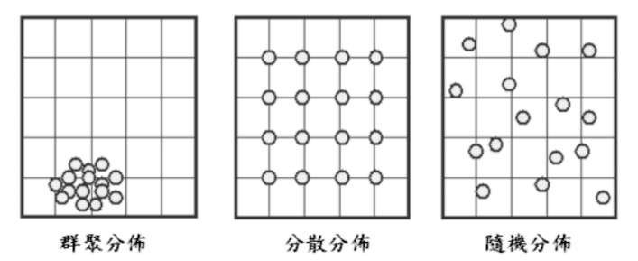
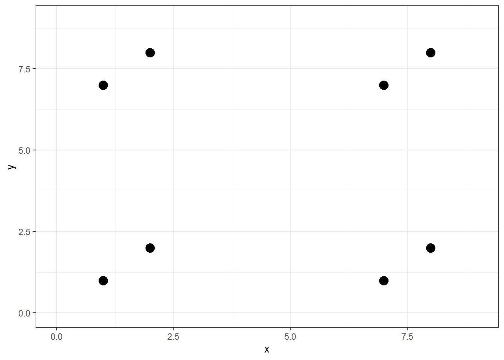

第 6 章 偵測點事件的空間群聚
6.1 空間型態檢定概念
地物的分布可以分成三種：完全的群聚分布(clustered)、完全的分散(均勻)分布(dispersed)與介於中間的隨機分布(random patterns)。
 來源：http://map-testing.blogspot.com/2016/09/blog-post_26.html
6.1.1 全域檢定與局部檢定
全域檢定(Global Test)
辨認並量化地物在研究區內的整體分配型態。局部檢定(Local Test)
辨認研究區內的局部區域的變異，或者是異常的局部區域。
有時全域與局部會有不一樣的檢定結果，全域檢定為有群聚現象，而局部則為隨機，因此建議同時檢定全域與局部，這樣可以得到較全面的結果。
6.1.2 空間型態的統計檢定
其檢定概念與一般檢定其實很像，先設定虛無假設(Null hypothesis, \(H_0\))與顯著水準(\(\alpha\))，找出統計量與樞紐量，算出拒絕域，接著就可以得出檢定結果。
6.1.3 統計分析與視覺化觀察
書中說統計方法比起肉眼可以更準確的結果，但我自己也沒有到十分相信檢定結果，不過如果連檢定結果都不相信我就不知道可以相信些甚麼了，因此還是決定相信他。
6.2 空間群聚的全域檢定
全域檢定的統計方法有：樣方分析(Quadrat analysis)、最鄰近分析(Nearest neighbor analysis)與距離函數分析(Distance function analysis)。
6.2.1 樣方分析(Quadrat analysis)
樣方分析會在套疊上大小相等的方格，並計算方格內的事件點數(其實整體我覺得很類似卡方檢定)。樣方分析適用於多個事件發生在同一地點的情況，例如在銀行的搶劫案等。方格內的點數就是密度的概念。期望值分布(我們期望完全隨機的分布)為Poisson 分佈。其中的平均數為： \[ \lambda = -\frac{N}{K} \] \(N\)為點數，就是地物發生的數量；\(K\)為格子數。
我們期待每個格子中的點數\(x\)(地物數)服從 Poisson 分布：
\[ x \sim P(\lambda) \ ; \ f(x) = \frac{e^{-\lambda}\lambda^x}{x!} \]

圖 6.1: Test
- K-S 檢定
K-S 檢定(Kolmogorov-Smirnov Test) 是用累積機率函數做比較，計算頻率表中每一個方格所佔的比例，接著再計算累積頻率，最後比較觀察值與期望值之間累積頻率的差異，並找出差異最大者，差異的值為\(D\)。
- 假設：
\[ \begin{cases} H_0 : 實際分布與理論分布一致（皆為 Poisson 分配）\\ H_1 : 實際分布與理論分布不一致（x\ 不為\ Poisson \ 分配） \end{cases} \]
可以直接把資料使用R來做檢定。
卡方檢定
假設：
\[ \begin{cases} H_0 : 實際分布與理論分布一致（皆為 Poisson 分配）\\ H_1 : 實際分布與理論分布不一致（x\ 不為\ Poisson \ 分配） \end{cases} \]檢定量：
\[ x^2 = \sum_1^k\frac{(f_o-f_E)^2}{f_E} \sim \chi^2(r-1) \] – \(k\) 表示不同級別； – \(f_o\) 為觀察值的頻率； – \(f_E\) 為期望值的頻率; – \(\chi^2(r-1)\) 自由度為(r-1)的卡方分配，因為有一個未知參數被估掉了，如果是用\(\bar{x}\)估\(\hat{\lambda}_{MLE}\)自由度會再(-1)，所以自由度會變成(r-2)
- 拒絕域：
\[ RR = \{\chi^2 \ge \chi^2_\alpha(r-1)\ or\ \chi^2_\alpha(r-2)\ \}\ (端看估計值被估掉幾個) \]
這其實也是跑一下R就可以出來的事情喔！
- 變異數與平均數比值
VMR(variance / mean ratio) 為變異數與平均數的比值($ $)
VMR > 1：
表示變異數比平均數大，表示方格內的事件數差異很大，有些很多有些很少，形成群聚分布(clustering)VMR < 1：
表示變異數比平均數小，也就是方格內的事件點都差不多，屬於均勻分布(dispersion)。
而在實際的計算上，通常會將 VMR 轉換成 t 分數，接著進行檢定。
- 影響樣方分析適用性的因素
樣方分析適合緊密的群聚，如：地震震央、商業區的竊盜案、城市的車禍等等。因為樣方分析不考慮地物彼此間的距離，只有計算地物是否在方格內。因此無法區別方格內的分布，而且也會因為方格的大小而改變檢定結果。
6.2.2 最鄰近分析(Nearest neighbor analysis)
最鄰近分析也是全域空間型態的檢定方式，並且只需考慮每一樣本與最近樣本的距離。基本概念就是透過最近鄰近距離的計算，檢驗樣本分布與隨機分布是否相近。
- 統計量\(R\)
\[ \begin{gather*} R = \frac{\bar{r}}{\bar{r}(e)} ;\\ \\ \bar{r} =\frac{\sum r_i}{n}\ ; \ \bar{r}(e) =\frac{\sqrt{A/n}}{2} \end{gather*} \] - \(r_i\)：樣本\(i\)與最近樣本的距離； - \(n\)：樣本數； - \(A\)：研究區面積； - \(\sqrt{A/n}\)：表示若為絕對均勻分布的情形下，每一點與最近樣本的距離應該為該值； - \(\bar{r}(e)\)：假設的隨機分布平均最鄰近距離值。
若： - \(R < 1\)：群聚分布 - \(R = 1\)：隨機分布 - \(R > 1\)：均勻(離散)分布
6.2.2.1 k階最鄰近分析
k階最鄰近分(k-order nearest neighbor) 是要修正最鄰近分析會忽略非最鄰近樣本的距離差異，因此可以將最鄰近的樣本改為第二近、第三近等等。若是使用第二近的樣本，k就等於2，以此類推。
6.2.3 距離函數的分析方式(Distance function analysis)
G 函數
G 函數為直接利用最鄰近分析方法計算的表格，計算最鄰近的累積頻率曲線，公式為： \[ G(d) = \frac{\# [d(s_i)<d]}{n} \]\(d\)：指定的距離；
\(d(s_i)\)：樣本\(i\)與最近樣本的距離(\(r_i\))
\(G(d)\)表示最近距離小於\(d\)的樣本數比例，隨著\(d\)增加\(G(d)\)會越來越接近1。
圖 6.2: G 函數
資料來源：https://silvafennica.fi/article/1008
虛線為隨機分布的曲線，而實線是實際資料的曲線。
群聚分布 \(\Rightarrow\) 資料線短距離內急速上升
均勻分布 \(\Rightarrow\) 資料線緩慢增加，在距離遠的地方急速上升
F 函數
F 函數概念與G 函數相似，不過並非計算樣本的最短距離，而是先產生隨機分布的點位\(p_i\)，並計算隨機點位最近樣本的距離，最後再以這些距離繪製累積頻率分布，公式為：
\[ F(d) = \frac{\#[d(p_i, S)<d]}{n} \] - \(d(p_i, S)\)：隨機選取的地點\(p_i\)與最近樣本之間的距離
\(F\)函數的優點是可以克服\(G\)函數樣本過少的問題，因為\(F\)函數在計算過程中可以選取夠多的隨機點，不用受到樣本數的限制。
下圖一樣虛線為隨機分布的函數圖；實線為實際資料：
圖 6.3: F 函數
- 群聚分布 \(\Rightarrow\) 資料線緩慢增加，在距離遠的地方急速上升
- 均勻分布 \(\Rightarrow\) 相較於G函數，F函數資料線短距離內急速上升
6.2.3.1 最鄰近分析、G 函數與 F 函數的比較
| 分析方法 | 群聚分布 均勻分布 | |
|---|---|---|
| 最鄰近(\(R\)) $R | <1$ | \(R >1\) |
| \(G\)函數 短 | 距離內急速上升 緩慢增加 | |
| \(F\)函數 先 | 緩緩上升，隨著距離增加曲線會快速上升 快速上升 |
這三種分析方法最大的危險在於，只有考慮最近的樣本的距離，若分布為下圖：

所有的點都和最近的樣本相近，與其他的點很遙遠，若使用以上三種方法，皆會被判定為群聚分布，然而卻是錯誤的判斷。
Ripley’s K 函數
這個 K函數就是為了要解決上述問題！K 函數的計算方式是以每一個事件點為圓心，以\(d\)為半徑畫一個圓，計算在圓圈裡面的事件點，最後取平均後除以分布密度。 \[ K(d) = \frac{\sum_i \sum_{i \ne j}I(d_{ij}<d)}{N \lambda} \]\(I(d_{ij}<d)\)：指標函數，\(i、j\) 兩個點距離小於\(d\)為\(1\)，其餘為\(0\)；
\(\sum_i \sum_{i \ne j}I(d_{ij}<d)\)：以\(i\)點為圓心，半徑為\(d\)的圓中所涵蓋的事件點數。
\(N\)：樣本數；
\(\lambda\)：平均每單位面積包含的樣本數
下圖為\(K\)函數的操作方式，就是一直畫圈
圖 6.4: K 函數
畫出來的函數圖形為：
圖 6.5: K 函數02
來源：http://spatstat.org/ECAS2019/notes/notes03.html
上圖左至右為均勻、隨機與群聚。其中群聚因為很快就可以涵蓋到事件點所以上升很快，而均勻則會在一個距離之後快速上升。因為通常實際的資料並不會這麼完美，因此必須要做檢定！
空間統計中，大多使用蒙地卡羅顯著性檢定(Monte Carlo singnificance test)，使用蒙地卡羅方法產生多次(一般來說是999次以上)，模擬在相同研究面積的地物為隨機分布的情形下K函數的數值，接著取第97.5%與2.5%值(也就是顯著水準為0.05)，繪製信心區間的上界與下界。
而為了方便圖表的察看，另訂一個函數\(L(d)\)： \[ L(d) = \sqrt{\frac{K(d)}{\pi}} \] 這個\(L\)函數的計算，在任何搜尋的期望值，就是搜尋距離本身(\(d\))(因為\(K(d)\)本身就是與一個圓的面積有關)。所以在分析時常常計算\(L(d)-d\)，在圖表中呈現\(L(d)-d\)就是一條水平線，很容易看出來差距。
- 邊緣效應及其矯正方法
不管是什麼分析方法，都會遇到一個難題需要解決，那就是邊緣效應。
- 解決：
除非像台灣是個島，不然研究區域之外的事件就會全部被忽略。在鄰近邊界的點，我們在研究中找到他最接近的點，但是說不定研究區外有一個點離他更近但是被忽略了，這就會讓我們高估最近點的距離。
其中有幾個解決方式： 1. 擴大一點研究區：在研究區外面形成一個環域，將位於環域內的事件點一併納入計算，但是有個問題，如果沒有蒐集到那些資料應該怎麼辦？
- 向內縮小研究區：將研究區巷內縮，在研究區邊緣產生環域，並將環域內的事件點視為邊緣事件計算。
- 校正：
因為\(K\)函數考慮了面積，不像是\(G、F\)函數只考慮了兩點距離，因此\(K\)函數邊緣校正方法較為複雜，其邊緣校正公式如下：
\[ K(d) = \frac{\sum_i \sum_{i \ne j}w(l_i,l_j)^{-1}(d_{ij}<d)}{N \lambda} \] 其中，\(w(l_i,l_j)\)是邊緣校正權重，表示已樣本\(i\)為中心，\(d\)為半徑的圓研究區內的面積比例。若全部都在研究區內則\(w(l_i,l_j)= 1\)；只有1/2在研究區內則\(w(l_i,l_j)= 0.5\)，在校正時就要乘2。